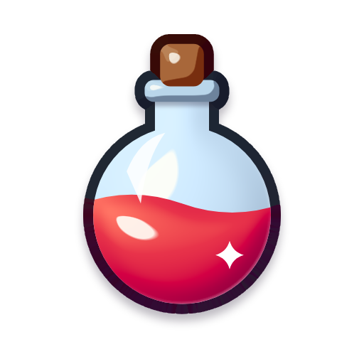
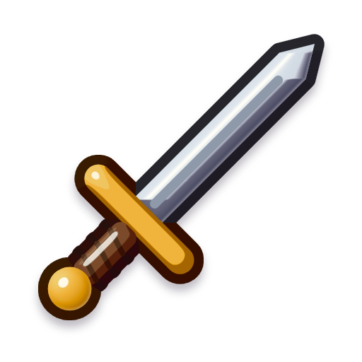
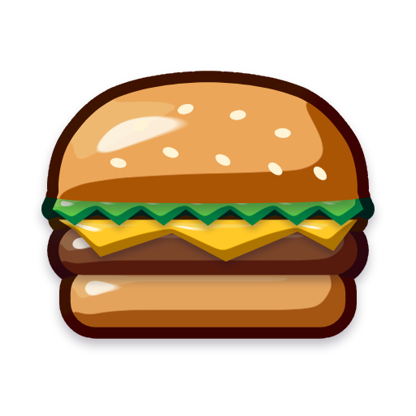
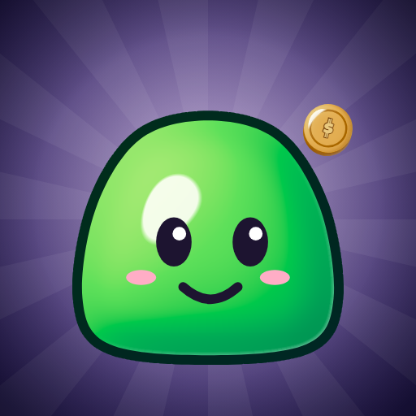
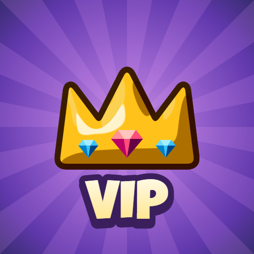
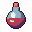
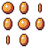

Every image here is built by scripts/rart.mjs build from the specs in skills/roblox-2d-art/examples/. Click an image for its review sheet: Roblox dark and light themes, real display sizes, silhouette, greyscale and squint tests, circle crop, safe zones, 9-slice stretching and the automatic checks.
items.art.mjs: one light, one outline weight, one shadow for the whole set; toon, gloss and metal shading; liquid clipped inside glass; cast shadows between parts. Set review

HealthPotiongloss glass, clipped liquid
IronSwordmetal, tube form, fuller KnightShieldtoon, clipped band BlueGemfaceted gem, front sparkles GoldCoingloss coin
Burgerproportions traced from a CC0 photostore.art.mjs: one mascot reused across the game icon, thumbnail, badge and pass. Set review

GameIcon512, opaque FirstWinBadgebadge, circle crop
VipPassgame pass, circle cropillustration.art.mjs: an original mascot in a dusk scene, drawn the way an illustrator works (references/illustration.md): posed on a skeleton (k.fk, k.limb), tapered brush strokes for leaves, scarf, grass and a path that narrows into the distance (k.stroke), a face built for expression (k.eye, k.brow, k.mouth), pines scattered in ground perspective (k.scatter, k.persp), one lantern key light with rim, cast and contact shadows, and a post pass with the light pool, colour grade, vignette and grain.
pixel.art.mjs: vector art snapped to a 32 px grid with a Lospec palette and selective outline; hand-placed pixels; an 8-frame coin spin packed into a sprite sheet with a Luau player (CoinSpin_sheet.luau). Set review

PotionPixel32x32, sweetie16 HeartPixel13x11, hand-placed
CoinSpin16x16, 8 framesui.art.mjs: 9-slice panel and button with their SliceCenter, a glyph with a white copy for ImageColor3, a seamless grass texture, and a 4x4 particle flipbook (SparkleBurst_sheet.luau). Set review